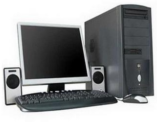
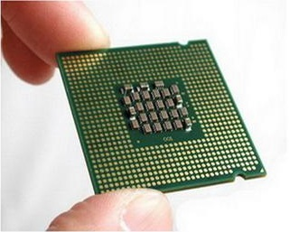
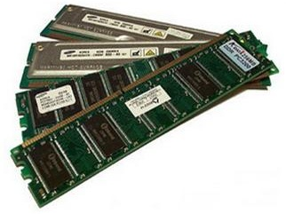
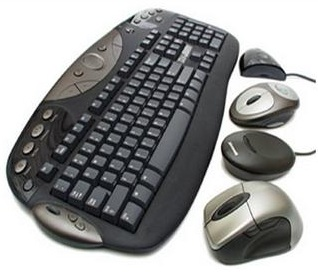
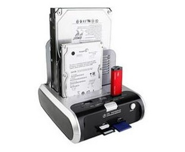

Устройство компьютера
| Компьютер - универсальное
устройство для хранения, обработки и передачи информации |
 |
|  |
Процессор - устройство,
обеспечивающее преобразование информации и управление другими
устройствами компьютера |
| Оперативная память -
устройство для хранения программ и данных, которые обрабатываются
процессором в текущем сеансе работы. При выключении компьютера вся
информация, находившаяся в оперативной памяти на момент выключения,
стирается |
 |
|  |
Устройства ввода
информации - это аппаратные средства для преобразования информации из
формы, понятной человеку, в форму, воспринимаемую компьютером |
| Устройства вывода - это
аппаратные средства для преобразования компьютерного представления
информации в форму, понятную человеку |
 |
|  |
Устройства хранения
информации (внешняя память) - предназначены для долговременного
хранения информации любого вида. Выключение компьютера не приводит
к очистке внешней памяти |
| Устройства для передачи
информации преобразуют компьютерные данные в сигналы, пригодные
для передачи по электрическим, оптическим и телефонным линиям |
 |